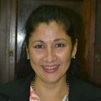

1er Congreso Iberoamericano
de Formación Continua
6, 7 y 8 de Octubre
Modalidad ONLINE
ORGANIZACIÓN DEL EVENTO
DIRECCIÓN
Sonia Mara Paulina Martin
COORDINACIÓN GENERAL
Mariela Vargas
Karina Soledad Aguirre
Nelson Oscar Gómez
Diana Duré
"Reflexionando y narrando experiencias sobre el desafío de enseñar y aprender en escenarios actuales."
DESTINATARIOS:
Docentes de todos los niveles y modalidades; técnicos - profesionales.
OBJETIVOS GENERALES:
- Analizar y reflexionar sobre la innovación educativa planificada e implementada en las instituciones de iberoamérica en escenarios actuales.
- Propiciar el intercambio y debate sobre la enseñanza y las propuestas de formación continua de las instituciones iberoamericanas en escenarios actuales.
FUNDAMENTACIÓN
Vivimos en una sociedad en constante transformación y eso implica adecuarnos a los contextos y escenarios en los que nos toca desenvolvernos como ciudadanos globales e hiperconectados. En esta línea, nos vemos exigidos a comprometernos con un tipo de formación dónde se recupere el sentido de aprender a aprender y así adecuarse a los requerimientos actuales. Esto nos lleva a generar cambios no sólo en el sistema educativo sino en todos los ámbitos de la vida social.
El contexto actual nos da una oportunidad para repensar el sistema educativo, para promover instancias de análisis, reflexión y evaluación de las prácticas docentes como profesionalizantes. Adaptando los ritmos de trabajo, cada docente / trabajador es diferente y debe poder decidir qué y cuándo quiere aprender.
Actualmente, la humanidad se encuentra dividida en dos grandes grupos: aquellos que viven en una sociedad en constante transformación y cambios permanentes, hiperconectados como ciudadanos globales, con recursos materiales y educación para hacer frente a posibles crisis; y por otro lado, aquellos que no tienen acceso ni siquiera a las necesidades básicas (alimentos, vivienda, salud, agua potable, servicio eléctrico, internet). En nuestro país, esta brecha entre los que tienen recursos y los que no lo tienen se acentuó con el contexto de pandemia y el ASPO en 2020.
La educación y el sistema educativo tuvieron que hacerle frente a esta brecha amplia de desigualdad; desigualdad en recursos y desigualdad en oportunidades. Se exigió a la docencia hacer posible el derecho de aprender de los niños, las niñas y los adolescentes con los medios materiales tecnológicos y las estrategias que tuvieran a su alcance, y de forma improvisada. La pandemia de COVID-19 lo transformó todo. El desafío vivido en el año 2020 para toda la docencia y el sistema educativo en todos sus Niveles y Modalidades sigue vigente, hoy. Tanto para el sistema formador, Educación Superior Provincial, como para la Dirección de Capacitación recuperar el aprender a aprender y el reaprender conceptos, estrategias didácticas y recursos de enseñanza para entornos virtuales de aprendizaje, en la formación docente inicial y en la formación continua, son objetivos fundamentales para lograr resignificar la profesión de la enseñanza en contextos desafiantes como los actuales. Sea digital o presencial o bimodal, la enseñanza atraviesa por un cambio de paradigma. Maestros, maestras, profesores y profesoras lograron enseñar apelando a la creatividad, generando nuevas estrategias, incorporando las TIC en su prácticas educativas. El contexto en ASPO de 2020 y el actual contexto en DISPO nos da una oportunidad para repensar el sistema educativo, para promover instancias de análisis, reflexión y evaluación de las prácticas educativas y profesionalizantes.
En este año 2021 se pretende propiciar experiencias formativas, en las que los docentes sean protagonistas y puedan comunicar aquellas vivencias que les permitieron ampliar su rol durante la pandemia: experiencias de aprendizaje total, inclusivas y adaptadas a todos los intereses y habilidades de aprendizaje. Se impulsa a la construcción de significados comunes, conocimientos compartidos, el aumento de la colaboración e intercambio de conocimiento entre equipos de docentes e instituciones educativas de la provincia, generar inquietudes en los participantes e invitarlos a nuevas dinámicas de trabajo, utilizando las tecnologías disponibles y su impacto en la educación.
Este modelo basado en las tecnologías es más necesario que nunca, con una gran cantidad de beneficios y posibilidades que hoy urge aprender y planificar de cara a la bimodalidad, es por ello, que apostamos a la formación continua que resulta verdadera y eficaz para todos. Este modelo implica un cambio profundo y un desafío. Exige nuevos modos de enseñanza y aprendizaje.
La clave está en nutrirse de las herramientas tecnológicas que permitan una mayor interacción con los estudiantes. No basta con adaptar los contenidos que se dan en la formación tradicional sino más bien es, posicionarnos comprometidamente y accionar desde otra perspectiva. Reestructurar nuestros contenidos, estrategias, actividades diferentes, valerse de las herramientas que nos ofrece los entornos virtuales. Con la intención clara de impulsar, estimular la curiosidad y la motivación de los estudiantes teniendo en cuenta los diferentes soportes y formatos, presentando los contenidos que se adapten a móviles, tablets y cualquier otro tipo de ordenador y realidades.
Se pretende buscar un equilibrio entre la innovación partiendo desde lo tradicional, que no son ni incompatibles, ni excluyentes. La bimodalidad sería los dos extremos de un mismo contenido que permite diferentes grados de combinación posible, adaptación flexible a las nuevas necesidades del proceso educativo.
El desarrollo de espacios virtuales de enseñanza y aprendizaje complementarios e incluso alternativos a los procesos tradicionales permite el desarrollo de comunidades virtuales que interactúan construyendo conocimientos compartidos mediante el aprendizaje cooperativo. Apuntamos a un trabajo conjunto de la comunidad para poder pensar en procesos desde una lógica de innovación tratando de poner en valor las experiencias a través de las narrativas.
Los nuevos escenarios educativos como la educación virtual eran vistos como una necesidad/posibilidad, pero ahora se ha convertido en una emergencia en poco tiempo tan inevitable que se ha tenido que improvisar. Ahora bien, la educación on line no es igual a la educación presencial y reemplazarla con clases a través de internet teniendo el mismo formato no nos servirá de mucho, ni por mucho tiempo. Se trata de reestructurar nuestra mirada, requiere una metodología, de otras herramientas lo cual genera un nuevo rol de parte del profesor y de parte del alumno, y porqué no también de la comunidad educativa en general.
La innovación supone un proceso de cambio, transformación de objetivos de aprendizaje, procedimientos de enseñanza, de recursos o de evaluación y aspectos de la administración educativa (Duke, 2004), que implica a personas (en nuestro caso, equipos de docentes) y a organizaciones, un cambio que, por otra parte, es capaz de generar transformaciones significativas en las prácticas y/o en las culturas institucionales (de aulas) con la finalidad general de producir efectos de mejora y beneficios en la solución de problemas o situaciones problemáticas.
Por ello, el objetivo principal de este Congreso supone analizar en profundidad el grado de desarrollo, así como las posibilidades y limitaciones, de los procesos de innovación educativa en las instituciones escolares no universitarias y universitarias de nuestra región.
EJES:
RESIGNIFICANDO ROLES EN LA COMUNIDAD EDUCATIVA ACTUAL O POST PANDEMIA
En la comunidad educativa se resignificaron roles por el surgimiento de nuevos espacios de intercambios que se han ajustado a cada modalidad y nivel. Esto permitió llevar a cabo la continuidad pedagógica en el tiempo de excepción y postpandemia. Tanto el desempeño de la figura directiva en las instituciones educativas como el rol de las familias y los estudiantes dieron un giro importante al encontrarse interpelados a las necesidades del momento. Esto origina nuevas ideas y conocimientos para resolver las problemáticas que surgen dentro de la organización escolar y su funcionamiento. Actualmente, es importante que el liderazgo se democratico para lograr una participación total de todos los actores de la institución y de la comunidad educativa.
Contenidos:
1.- Nuevos Ejercicios de liderazgo en la gestión directiva y docente.

2.- El rol de la familia en el aprendizaje remoto.
3.- Nuevos roles de los estudiantes en los actuales escenarios.

4.- La igualdad de género en la construcción de la sociedad del conocimiento.
PEDAGOGÍAS EMERGENTES
En este eje se desarrollarán los enfoques e ideas pedagógicas, que surgen en relación al uso de las TIC en educación y que son utilizadas como soporte para el acceso de la información, al conocimiento,y al proceso enseñanza- aprendizaje. La utilización de diferentes herramientas tecnológicas genera experiencias donde la enseñanza apunta a nuevas y creativas estrategias didácticas de calidad e inclusión.
Contenidos:

1.- Nuevos escenarios educativos: inclusión de TIC en la enseñanza y el aprendizaje.

2.- Digitalización de la enseñanza e innovación y creatividad: estrategias de enseñanza remota (ABP, aula invertida, comunidades de aprendizajes, aprendizaje cooperativo, gamificación).

3.- Propuestas pedagógicas para la enseñanza inclusiva y de calidad.
CIENCIA, TECNOLOGÍA Y DESARROLLO SUSTENTABLE
Eje que aborda a la 4ta. Revolución Industrial, que está borrando los límites entre las esferas físicas, digitales y biológicas. La educación no es ajena, dado que debe preparar a las personas para este nuevo escenario que requerirá nuevas competencias no solo de carácter técnico y metodológico. La educación es la herramienta más poderosa, que se puede usar, para responder a la necesidad ineludible de actualizar y mejorar las competencias de cada vez mayor número de personas y además a lo largo de sus vidas.
- Educación disruptiva para afrontar los retos del futuro.
- Educación, Creatividad y Emprendedurismo: Conductores del desarrollo sostenible.
- Industria 4.0 :El desafío de las tecnologías educación 4.0.
- Industria 4.0 :El desafío de las tecnologías educación 4.0 Ecotecnología y ecotecnias.
- Tecnicaturas superiores hacia una mejor especialización e inserción en el mundo laboral.
- Tecnologías para el agro.
- Las prácticas profesionalizantes como vinculación sustantiva entre la formación académica y los requerimientos de los sectores científico, tecnológico y socioproductivo.
REQUISITOS PARA LA INSCRIPCIÓN AL EVENTO:
Docentes de todos los niveles y modalidades y técnicos - profesionales. Los cursantes deben contar con herramientas informáticas para conectarse al Congreso.
Carga horaria total: 27 horas reloj - 40 hs. cátedras.
LUGAR, CRONOGRAMA Y ACTIVIDADES DEL EVENTO:
A través de zoom, canal de youtube del Congreso.
El Congreso se estructura en torno a cinco actividades principales y un grupo de discusión de alumnos y docentes:
I. Conferencias, a cargo de especialistas en invitados, en interacción con los participantes.
II. Conversatorios, esta modalidad consiste en un espacio de intercambio de ideas, en el marco de la relación entre diferentes pares en que se busca dinamizar conceptos, propuestas y experiencias relacionadas con las problemáticas presentadas.
III. Paneles, encuentros en los que varios especialistas, a través de diversas exposiciones breves de sus ideas u objetivos.
IV. Talleres, aquí se realizarán actividades de intercambio con los asistentes, en donde se proponen diversas prácticas e interacción entre los participantes.
V. Sala de experiencias, aquí se expondrán narrativas y experiencias que fueron llevadas a cabo con el fin de construir conocimiento sistemático a través de la práctica educativa.
Bases de participación: Descargar
CRONOGRAMA
9:00 a 10:00 hs. - Apertura del Congreso por parte de las autoridades provinciales.
10:00 a 11:00 hs. - Conferencia de Estanislao Antelo - María Teresa Alcalá - Patricia Nuñez - Patricia Delgado - Teresa Artieda - Mercedes Leal - Adriana Puigros.
11:15 a 12:15 hs. - Paneles (pueden ser hasta 3 paneles por día) Educación y Tic - Formación docente en la Educación Superior - Nuevas pedagogías - Educación e innovación - Educación ambiental - Educación y perspectiva de géneros - Educación inclusiva - Educación e interculturalidad.
15 a 16 hs. - Exposición de Experiencias.
16 a 18 hs. - Talleres.
9 a 12.00 hs. - Paneles.
15 a 16.00 hs. - Exposición de Experiencias
16 a 18 hs. - Talleres.
9 a 10 hs. - Paneles.
10 a 11 hs. - Conferencia.
11 a 12 hs. - Cierre (Autoridades)
Canal de youtube disponible donde se encuentran diferentes ponencias y experiencias.
Modalidad del evento: Virtual a distancia
ORGANIZACIÓN Y GOBIERNO:
Dirección: Sonia Mara Paulina Martín.
Coordinación General: Aguirre Karina Soledad, Gómez Nelson, Vargas Mariela, Duré Diana.
Comité Académico: Sonia Martín, Diana Duré, Leticia Codazzi, Mariela vargas, Andrea Melgarejo, Nicolás Loizaga, Alejandro Sandi, Nelson Gómez
INSTITUCIONES OFERENTES:
FINANCIAMIENTO
Sponsoreo privado y de organismos oficiales.